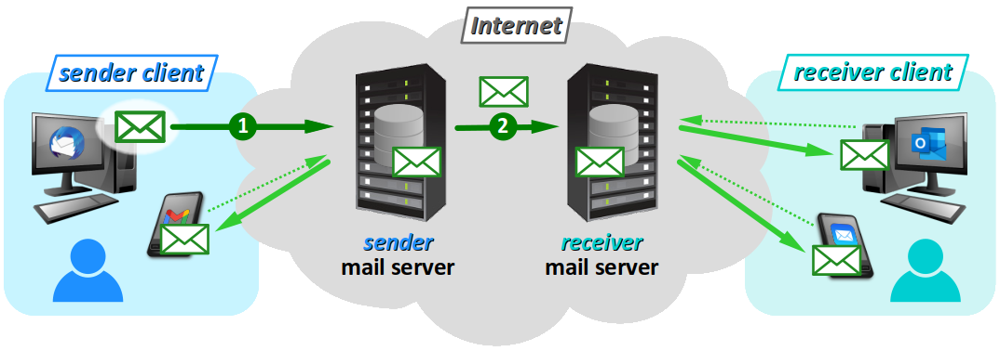
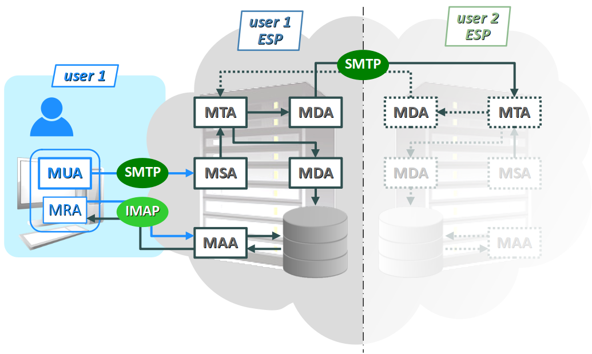
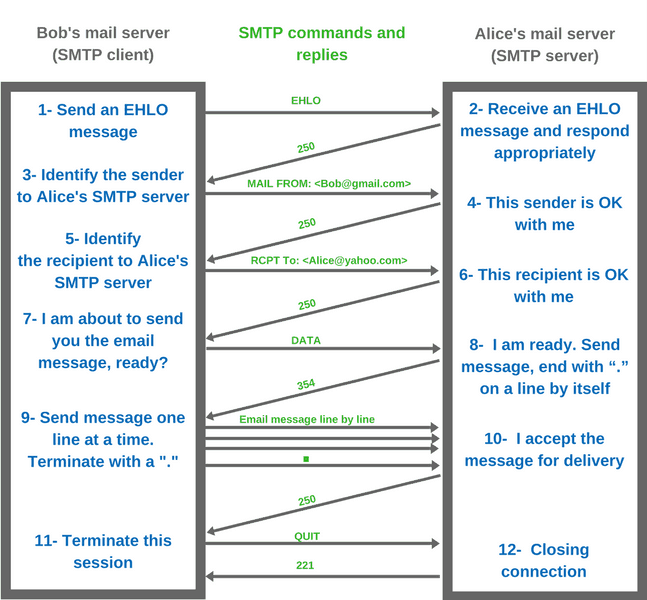

Les services de messagerie font partie des applications les plus anciennes et les plus utilisées de l'Internet, et il en existe une grande diversité.
- Principalement, on a le service de courrier électronique ou courriel W, en anglais, e‑mail, abréviation de electronic mail, dont la francisation mel – pour « message électronique » – n'a pas vraiment réussi à concurrencer l'anglicisme direct.
- Très largement utilisés également, mais d'usage moins formel, on trouve les services de messagerie instantanée W – en anglais, instant messaging abrégée IM. Plus anciens qu'on pourrait le penser (ils sont l'héritage de la commande talk W du système d'exploitation Unix), ces services reposent sur des architectures matérielles et logicielles différentes de celles du courriel. Ils ne seront pas abordés dans ce chapitre.
Comme le web, le courriel est une application opérant sur les réseaux, massivement utilisée par le grand public, mais dont la complexité est souvent méconnue. Cette complexité s'est accentuée ces dix dernières années avec l'essor de la mobilité (ordinateurs portables, smartphones…) qui a multiplié le nombre de clients par utilisateur et fait émerger le besoin pour chaque utilisateur de « dématérialiser » le stockage des courriels.
Pour un technicien en informatique, une bonne connaissance du service de messagerie est indispensable. Dans cet objectif général, ce chapitre propose dans l'ordre :
- une présentation générale qui doit suffire pour effectuer des tâches simples comme paramétrer un logiciel client de messagerie pour un particulier ou un travailleur indépendant ;
- une description détaillée de l'architecture matérielle et logicielle qui doit fournir les bases pour participer à la mise en place (installation et configuration) d'un serveur de messagerie dans un contexte professionnel plus large.
Généralités
Architecture simplifiée
Le service de courriel est basé sur un double modèle client‑serveur :
- l'un pour expéditeur
- un autre pour chaque destinataire d'un courriel.
Pour comprendre le principe de cette architecture, représentée de façon simplifiée sur la figure ci‑dessous, suivons les étapes de transmission d'un courriel depuis son expéditeur jusqu'à un destinataire unique. On ne tient pas compte ici des potentiels scénarios d'erreur : destinataire inconnus, etc.
- Agissant comme client, un hôte de l'expéditeur transmet un courriel jusqu'au serveur de courriel auprès duquel il a souscrit à un compte de messagerie. Ce courriel est alors stocké dans une base de données, précisément dans le dossier
Envoyésde l'expéditeur. - Le serveur de courriel sortant transmet le courriel au serveur de courriel auprès duquel le destinataire a souscrit son compte de messagerie.
Envoyés sur cet hôte. Dans ce processus, seules les deux étapes numérotées ci‑dessus se déroulent dans un ordre déterminé. En revanche, il n'est pas possible de déterminer l'ordre de délivrance du courriel aux différents clients.
Le choix de cette architecture se justifie par deux aspects déterminants.
- Elle ne requiert aucune synchronisation entre les machines hôtes respectives de l'expéditeur et du destinataire. Ces deux machines jouent toujours le rôle de client et n'ont donc aucun impératif de continuité de fonctionnement pour garantir le bon fonctionnement du service.
- Le choix d'un serveur de messagerie électronique – qui, lui, assure la continuité de service – peut être différent entre le destinataire et l'expéditeur. Autrement dit, l'envoi de courriels n'est pas limité aux clients d'un même serveur de messagerie.
Notion de fournisseur de messagerie
Un peu comme avec la notion de FAI pour l'accès au web (cf. chap. R1‑I ), on parle de fournisseur de messagerie électronique W – en anglais, email service provider ou ESP – pour désigner un organisme qui gère des serveurs de service de courriel pour des utilisateurs.
Dans la pratique, le choix d'un service de messagerie dépend principalement du statut social du client.
- Un particulier opte en général pour son FAI (Free, Orange, etc.), ou encore un grand acteur du web (Google, Yahoo, etc.).
- Une petite structure – entreprise ou autre organisme – qui fait appel à un hébergeur de données (OVH, Ikoula, etc.) peut négocier auprès de ce dernier la prise en charge de son serveur de courriel, avec à la clef la possibilité de disposer d'un nombre suffisant d'adresses et d'un nom de domaine personnalisé.
- Une grande structure ayant du personnel suffisamment qualifié a économiquement et techniquement intérêt à mettre en place son propre serveur de messagerie. Ce dernier n'est alors pas situé dans l'Internet comme sur la figure supra, mais dans un réseau local de l'entreprise ou de l'organisme, sur des serveurs accessibles depuis l'extérieur (en DMZ – cf. chap. R1‑II ).
La « démocratisation » des nano‑ordinateurs (Raspeberry Pi, Odroid, etc…) permet aujourd'hui à une petite structure de mettre en place à moindre coût (acquisition de la carte et d'un disque dur, très faible consommation électrique de l'appareil) un serveur de messagerie interne.
Notion de compte et d'adresse de messagerie
Pour pouvoir utiliser le service de messagerie électronique sur l'Internet, il faut souscrire un compte de messagerie auprès d'un fournisseur de messagerie. Ce compte est constitué :
- d'une adresse électronique unique, rattachée à un nom de domaine hébergeant un serveur de messagerie ;
- d'un espace de stockage réservé sur un serveur du fournisseur de messagerie pour mémoriser et rendre en permanence accessibles à l'utilisateur ses courriels entrants, sortants et autres (brouillons, archives, poubelle…).
L'adresse électronique W d'un compte de messagerie est une chaîne de caractères composée de la forme :
partie locale @ nom de domaine
de telle sorte que la combinaison des deux chaînes de caractères de part et d'autre du symbole @ (prononcé usuellement « at » à par anglicisme) soit unique.
Lors de la souscription d'un compte de messagerie, le fournisseur de messagerie refuse automatiquement la création du compte si l'adresse est déjà répertoriée comme utilisée dans ses bases de données.
Le service de messagerie datant des premiers développement de l'Internet, les adresses ont dès le départ été composées exclusivement dans le jeu de caractères ASCII restreint (cf. chap. C3‑VIII C).
De plus, la partie locale obéit à des règles syntaxiques supplémentaires, formelles ou d'usage :
- le caractère
.usuellement employé comme séparateur ne doit être ni initial, ni final, ni réitéré à suite (la sous-chaîne..est interdite) ; - usuellement, aucune distinction de casse n'est opérée, et il est d'usage d'écrire les adresses exclusivement en lettres minuscules ;
- les symboles employés comme préfixe ou séparateurs dans les URL sont à éviter (par exemple,
/ ? # &etc. – cf. chap. R2‑I ), même si rien n'interdit formellement leur usage.
Par ailleurs, la partie locale n'est soumise à aucune contrainte d'identification de l'utilisateur. Autrement dit, on peut choisir n'importe quel nom, tant qu'il n'est pas déjà utilisé pour un autre compte sur le même domaine.
En revanche, pour une adresse professionnelle, il est recommandé d'adopter le format usuel :
nom . prénom
éventuellement suivi d'un numéro en cas d'homonymie. Cette convention facilite l'identification d'un expéditeur par son destinataire. De même, cela facilite les tentatives d'un expéditeur d'adresser un courriel à un destinataire dont il n'a pas l'adresse mais dont il connaît le nom et l'organisme pour lequel il travaille.
Solutions logicielles pour les clients
Du côté de l'utilisateur, le service de messagerie électronique peut être mis en œuvre de deux façons.
- On peut employer un logiciel client de messagerie W, c'est‑à‑dire une application dédiée à ce service qui s'exécute directement sur une machine hôte (par exemple, Microsoft Outlook, Mozilla Thunderbird…). On parle de client lourd.
- On peut aussi opérer par l'intermédiaire d'une messagerie web W (en anglais, webmail), c'est‑à‑dire une page web dynamique pouvant s'exécuter sur n'importe quel logiciel navigateur qui constitue une application web dédiée à ce service, mise à disposition du client par son fournisseur (par exemple, Gmail, Mail.one…). On parle alors de client léger.

La distinction entre client lourd et léger s'explique par le fait dans pour cette deuxième solution, il n'y a pas de de transfert des courriels – ni entrant, ni sortants – entre la machine hôte de l'utilisateur et son serveur de messagerie. En effet, en règle générale, l'application webmail s'exécute précisément sur le même serveur (machine) que l'ensemble des composants logiciels nécessaires au service de messagerie.
Protocoles de messagerie électronique

Quelles que soient les solutions logicielles retenues, la transmission de courriels fait appel à des protocoles de communication applicatifs (couche nº 7 du modèle OSI) spécifiques :
- SMTP W (simple mail transfer protocol) pour les courriels sortants ;
- POP W (post office protocol) ou IMAP W (Internet message access protocol) pour les courriels entrants.
La connaissance de ces sigles est utile pour paramétrer un client de messagerie.
Pour les courriels entrants, le protocole IMAP, plus récent que POP, est devenu le plus couramment employé, en raison de la synchronisation qu'il met en œuvre entre les différents hôtes clients pour un même compte de messagerie. Avec ce protocole, toutes les actions sur les messages du compte de messagerie (envoi, suppression, classement, etc.) depuis un client sont répercutées à l'ensemble des autres clients. Il en résulte que :
- cela facilite la gestion du compte ; en particulier, il n'est pas nécessaire de supprimer un message indésirable sur chacun des clients ;
- mais cela diminue la robustesse aux erreurs – par exemple, après avoir vider la corbeille sur un client, il n'est pas possible de récupérer son contenu sur un autre client.
Les protocoles de messagerie utilisent théoriquement des ports standards : le nº 25 pour SMTP et le nº 143 pour IMAP – cf. chap. R1‑IV . Mais dans la pratique, dès lors que l'on fait appel à un système de chiffrement (SSL/TLS par exemple) ou qu'on utilise diverses possibilités offertes par un client de messagerie, d'autres numéros de port sont requis, avec en général :
- le nº 587 (chiffrement explicite) ou le nº 465 (chiffrement implicite) pour SMTP ;
- le nº 993 pour IMAP.
Ces valeurs sont utiles à connaître pour configurer un client de messagerie, même si de plus en plus, elle sont automatiquement renseignées par les logiciels grand‑public dans leur interface fenêtrée de configuration.
Sauf exception, le port nº 25 est tout simplement bloqué par les FAI pour empêcher la submersion des comptes de messagerie (et donc des serveurs…) par du spam. Aujourd'hui, il n'est utilisé qu'entre les relais SMTP.
Constitution d'un courriel
Un courriel est un objet potentiellement complexe, toujours divisé en deux sections.
- Il commence par son en‑tête (header), qui est un texte constitué une suite de champs, de la forme :
nom: valeur
dont certains (expéditeur, destinataires, sujet) sont spécifiés par l'utilisateur lors de la composition du courriel ; les autres champs (date, encodage) sont automatiquement déterminés par le client ou les serveurs de messagerie participant à son transfert ; - Il se poursuit avec son corps (body), qui forme le contenu du message à proprement parler et qui peut inclure toutes sortes de données (texte avec ou sans mise en forme, images, vidéos, etc.).
Sur un client de messagerie ou une page webmail, les noms des champs sont souvent traduits et explicités dans la langue de l'interface utilisateur. Néanmoins, on les trouve parfois dans leur format original, en particulier :
- le champ
cc:, dont le nom signifie carbon copy pour faire référence au procédé ancien de duplication d'un document W. Il permet de mettre un ou plusieurs destinataires en copie – au sens où ils ne sont pas considérés comme faisant partie des destinataires directs du courriel ; - le champ
bcc:qui signifie blind carbon copy, le terme blind (en français, « aveugle ») précisant que la ou les adresses spécifiées à la suite recevront une copie du courriel sans être visibles par les autres destinataires (d'où le sigle françaiscci:pour copie carbone invisible).
Lorsqu'un courriel est adressé seulement à des destinataires en copie cachée (invisible), le terme undisclosed recipients (en français, « destinataires confidentiels ») apparaît à la réception dans le champ destinataire. C'est un procédé commode pour les listes de diffusion réunissant des publics qui n'ont pas à connaître mutuellement leurs adresses.
Architecture matérielle et logicielle détaillée
Schéma de principe et composants logiciels
Pour des motifs évidents de pédagogie, le schéma de principe du service de courriel présenté supra n'est pas détaillé. Mais pour un futur technicien réseau, il est nécessaire de connaître et situer les différents processus à l'œuvre – des composants logiciels s'exécutant en tâche de fond.
Sur la figure ci‑dessous, l'architecture n'est détaillée que pour un seul utilisateur. Il faut imaginer une architecture potentiellement symétrique chez un autre utilisateur, l'un comme l'autre pouvant jouer le rôle d'expéditeur et de destinataire.
La complexité de cette architecture découle de plusieurs facteurs :
- les gigantesques volumes de données que représentent aujourd'hui les courriels des utilisateurs stockés sur les serveurs du fait des protocoles synchronisés majoritairement utilisés ;
- la nécessité pour les fournisseurs de service de mettre en œuvre des dispositifs de filtrage pour diminuer l'impact des spams Wsur le trafic et les données stockées sur l'Internet.
Les composants logiciels intervenant dans le service de courriels sont désignés par des sigles de trois lettres commençant tous par « M » pour mail ou message et se terminant tous par « A » pour agent.
- Un MUA W ou mail user agent désigne aussi bien un logiciel client de messagerie qu'une page de messagerie web. Hébergée sur une machine hôte d'un réseau local, cette application agit comme client pour le protocoles SMTP.
- Un MRA W ou mail retrieval agent est un composant intermédiaire pour la récupération des courriels d'un utilisateur depuis le serveur de son fournisseur de messagerie. Il agit donc comme client pour les protocoles IMAP ou POP3.
- Un MSA W ou mail submission agent, exécuté sur un serveur, joue le rôle d'intermédiaire entre le MUA et le MTA du fournisseur de service de messagerie du client expéditeur.
- Un MTA W ou mail transfer agent, très souvent intégré à la même application que celle qui exécute le MSA, a pour rôle de router les courriels entrants et sortants à destination des MDA.
- Un MDA W ou mail delivery agent transmet les courriels sortant à destination des serveurs des fournisseurs de messagerie des destinataires. Un autre MDA est également chargé d'alimenter la base de données des courriels d'un utilisateurs, tant avec les courriels entrants que les courriels sortants.
- Un MAA ou mail access agent est un composant exécuté sur serveur qui sert à accéder à la base de données des courriels du client pour répondre aux requêtes de consultation des MRA.
Enregistrement des serveurs de messagerie
Comme tout nom de domaine (cf. chap. R2‑I ), le nom de domaine d'un compte de messagerie (cf. supra ) doit :
- être conforme aux règles de syntaxe qui les régissent ;
- faire l'objet d'un enregistrement DNS, c'est‑à‑dire dans le serveur de nom du domaine auquel il appartient (par exemple,
gmail.comest enregistré dans le serveur de nom du domaine.com).
De plus, tout serveur de messagerie qui participe au protocole SMTP doit faire l'objet d'un enregistrement DNS de type MX W – pour mail exchanger. Un tel enregistrement est de la forme :
où le champ priority est un entier positif qui spécifie la préférence à accorder à cet hôte pour l'envoi d'un courriel.
Le protocole de courriels sortants SMTP
Le protocole SMTP W (simple mail transfer protocol) est un protocole applicatif (couche n° 7 du modèle OSI) pour l'émission de courriels. Il est utilisé par pratiquement tous les logiciels clients de messagerie, qu'ils soient lourds ou légers, ainsi que par les agents relais SMTP des serveurs d'échanges de courriels (MSA, MTA, MDA).
Développé au début des années 1980, le protocole SMTP est maintenant basé sur la RFC 5321 publiée en 2008. Parce que les courriels sont potentiellement volumineux, il recourt au protocole de transport TCP (cf. chap. R1-IV ).
Le protocole SMTP utilise par défaut le port nº 25, et dans sa version sécurisée par TLS, ou bien le port nº 587 (chiffrement explicite), ou bien le nº 465 (chiffrement implicite).
Outre le recours à TCP, le protocole SMTP présente plusieurs similitudes avec le protocole HTTP :
- Il opère selon un modèle client‑serveur, y compris entre deux serveurs d'échange, l'un jouant le rôle de client, l'autre de serveur.
- Il opère essentiellement en mode texte au sens où, à la manière du protocole HTTP 1.1, il met en œuvre des échanges de lignes de caractères (chacune terminée par un saut de ligne
\r \n) et non pas des messages conventionnellement présentés en mots de 32 bits comme DHCP, NTP, TCP, etc. - Il utilise des codes numériques pour les réponses du serveur, comme résumés sur le figure ci‑contre (cf. par exemple cette page web pour plus de détails ).
-
250pour requested mail action okay ; -
354pour start mail input ; -
452pour requested action not taken: insufficient system storage ; -
550pour requested action not taken: mailbox unavailable ;
Mais par ailleurs, le protocole SMTP présente plusieurs spécificités, notamment celle d'être orienté connexion – en plus de la connexion établie préalablement via le protocole TCP.
- On parle de session SMTP pour désigner la succession d'échanges de données entre le client et le serveur pour l'envoi d'un courriel.
- Une session met en œuvre un nombre variable de transactions SMTP, chacune consistant en une séquence de requêtes/réponses.
- On parle préférentiellement de commande pour désigner une requête du client, dont les plus usuelles sont celles décrites ci‑dessous :
-
HELOsuivi de l'adresse IP ou du nom de domaine du client (qui, rappelons‑le, peut être un serveur) ; -
MAIL FROMsuivi de l'adresse de courriel de l'émetteur – cet argument étant appelé lereturn-pathdu courriel ; -
RCPT TOsuivi de l'adresse de courriel de destinataire – cet argument étant appelé unforward-pathdu courriel (il faut réitérer cette commande pour chaque destinataire, qu'il soit direct ou en copie) ; -
DATApour ensuite envoyer les données constituant le courriel (en‑tête et corps), qui sont envoyées ligne par ligne ; le client termine l'émission par une ligne constituée du seul caractère. -
QUITpour terminer la session.
EHLO lorsque le client utilise l'extension ESMTP ; La figure ci‑dessous illustre un exemple académique virtuel de session SMTP.
Le protocole de courriels entrants IMAP
WEncodage d'un courriel
Comme une page web, un courriel est n'est pas seulement constitué de texte, il peut aussi inclure des images ou d'autres fichiers joints, sans restrictions de format.
- Pour les éléments de Q, comme dans le web, la tendance est à la généralisation de l'encodage des caractères en UTF‑8 . En effet, ce format a l'avantage de prendre en charge avec un surcoût minimal l'ensemble du jeu de caractères Unicode (cf. chap. C3‑IX C).
- Quant aux autres types de données (images, son, etc.), ils sont encodés/décodés dans différents formats grâce au standard de transcodage MIME avant leur émission/réception (cf. infra).
Néanmoins, la question de l'encodage des courriels reste épineuse en raison du maintien de contraintes historiques pour l'en‑tête :
- les noms des champs doivent être composés exclusivement dans le jeu de caractères ASCII restreint ;
- les valeurs des champs peuvent être composés dans le jeu de caractères Unicode seulement si le client de messagerie et les serveurs d'acheminement mettent en œuvre le protocole SMTPUTF8 (car le protocole SMTP ne gère que les caractères du jeu ASCII restreint).
Il arrive encore qu'un courriel parvienne à son destinataire avec des problèmes d'encodage des lettres accentuées – typiquement, « é » à la place du « é » – dans le champ sujet alors que le corps du texte est correctement affiché. Il suffit pour cela qu'il ait été composé en UTF-8 mais acheminé via un serveur ne prenant pas en charge le protocole SMTPUTF8.
Le standard MIME
Le standard MIME W – pour multipurpose Internet mail extensions – est une norme de transcodage qui permet la prise en charge par les protocoles de messagerie de contenus encodés dans des formats autres que l'ASCII : texte en caractères larges (UTF‑8 ou autre), images, etc.
Il est mis en œuvre par tous les clients et serveurs de messagerie récents.
Comme l'indique le terme « multipurpose », le standard MIME est une norme polyvalente. Elle fait appel à diverses techniques de transcodage pour :
- être rétro‑compatible avec les systèmes d'échange de courriels existant, en particulier avec le protocole SMTP qui n'accepte les courriels encodés dans le standard ASCII restreint (donc formés d'octets 7‑bits, c'est‑à‑dire dont la valeur décimale ne dépasse pas
127) ; - être efficace quel que soit le type de données que l'on souhaite incorporer dans un courriel, c'est‑à‑dire adapter la technique de transcodage au type de données (texte, image, etc.).
La mise en œuvre de MIME consiste, avant l'émission d'un courriel, à transcoder (coder) dans le jeu de caractère ASCII restreint tout contenu qui ne l'était pas, et à effectuer le transcodage réciproque (décoder) à la réception du courriel.
Pour cela, le standard MIME ajoute aux courriels quelques champs d'en‑tête spécifiques (cf. supra ).
- Le champ
MIME-Version:précise la version de la norme, actuellement1.0. - Le champ
Content-Type:indique le type de données contenues dans le corps du courriel. On peut notamment avoir : -
text/plainpour un corps constitué texte non formaté (le terme anglais plain signifie « simple » en français) ; -
text/htmlpour un corps constitué texte formaté en langage HTML ; -
multipart/mixedpour un corps structuré en plusieurs parties encodées dans différents formats, typiquement un courriel avec des pièces jointes. - Le champ
Content-Transfert-Encoding:indique la technique de transcodage du contenu pour permettre le transfert du courriel. On peut notamment avoir : -
7bitssi aucun transcodage n'est appliqué ; le corps du courriel (ou la partie) doit alors être codé comme une suite de lignes de caractères exclusivement pris dans le jeu ASCII restreint, chaque ligne ne dépassant pas 998 caractères et se terminant un saut de ligne codé par la séquence CR LF (cf. chap. C3‑VIII C) ; -
quoted-printableW qui met en œuvre un transcodage d'autant plus efficace que le contenu est un texte constitué de caractères du jeu ASCII restreint ; -
base64W qui met en œuvre un transcodage mieux adapté aux autres types de données (images, etc.) qui ne sont pas encodées sous forme de texte.
Lorsqu'un message est structuré en plusieurs parties, chacune est délimitée de la partie antérieure par une frontière – en anglais, boundary – et possède ses propres champs d'en‑tête MIME.
On donne ci‑après le contenu brut d'un courriel de démonstration :
- dont le sujet est «
Démonstration MIME» (il contient une lettre accentuée, donc hors du jeu ASCII restreint) ; - dont le corps est le texte «
Courriel écrit en français.» (sans formatage) ; - qui inclut deux pièces jointes :
- une image au format
.png; - un autre courriel, portant le sujet «
essai ASCII» et contenant le texte «Hello, World.» (exclusivement composé en ASCII restreint) ;
sachant que le client de messagerie utilisé (Mozzilla Thunderbird) encode par défaut le courriel en UTF‑8. Ce contenu est obtenu via la commande Afficher la source accessible via le bouton contextuel Autres.
En plus des éléments en vert ci‑dessus, pour bien visualiser les aspects essentiels de l'encodage MIME :
- les frontières de découpage du courriel en différentes parties MIME ont été coloriés en
rouge; - dans chaque partie, les valeurs des champs d'en‑tête MIME ont été coloriés en
bleu; - Les passages sans intérêt on été coupés et remplacés par le symbole
[…]et les adresses IP ont été masquées.
Return-path: <Francois.Girault@ac-versailles.fr> Received: from smtpout2.ac-versailles.fr ([XXX.XXX.XXX.XXX]) by storel.in.ac-versailles.fr (Oracle Communications Messaging Server 7.0.5.38.0 64bit (built Nov 28 2016)) with ESMTP id <0QKN00IKTPDCFH70@storel.in.ac-versailles.fr> for francois.girault@ac-versailles.fr; Tue, 01 Dec 2020 11:34:24 +0100 (CET) Original-recipient: rfc822;francois.girault@ac-versailles.fr Received: from localhost (localhost [127.0.0.1]) by smtpout2.ac-versailles.fr (Postfix) with ESMTP id AFDDEE80C48 for <francois.girault@ac-versailles.fr>; Tue, 1 Dec 2020 11:34:24 +0100 (CET) […] X-Virus-Scanned: Debian amavisd-new at smtpout2.in.ac-versailles.fr X-Spam-Flag: NO X-Spam-Score: -2.9 X-Spam-Level: X-Spam-Status: No, score=-2.9 tagged_above=-999 required=6.2 tests=[ALL_TRUSTED=-1, BAYES_00=-1.9] autolearn=ham autolearn_force=no Received: from smtpout2.ac-versailles.fr ([127.0.0.1]) by localhost (smtpout2.in.ac-versailles.fr [127.0.0.1]) (amavisd-new, port 10024) with ESMTP id gp-J4VDQ_-f5 for <francois.girault@ac-versailles.fr>; Tue, 1 Dec 2020 11:34:24 +0100 (CET) Received: from [192.168.0.12] (unknown [XXX.XXX.XXX.XXX]) by smtpout2.ac-versailles.fr (Postfix) with ESMTPA id 5EC26E80BFC for <francois.girault@ac-versailles.fr>; Tue, 1 Dec 2020 11:34:24 +0100 (CET) To: =?UTF-8?Q?fran=c3=a7ois_Girault?= <Francois.Girault@ac-versailles.fr> From: =?UTF-8?Q?Fran=c3=a7ois_Girault?= <Francois.Girault@ac-versailles.fr> Subject: =?UTF-8?Q?D=c3=a9monstration_MIME?= Message-id: <7f27afdb-ef6c-d2b9-e370-e03ae3382a50@ac-versailles.fr> Date: Tue, 01 Dec 2020 11:33:31 +0100 User-Agent: Mozilla/5.0 (Windows NT 10.0; Win64; x64; rv:78.0) Gecko/20100101 Thunderbird/78.5.0 MIME-version: 1.0 Content-type: multipart/mixed; boundary=------------471AF95E97E742D31C117386 Content-language: fr This is a multi-part message in MIME format. --------------471AF95E97E742D31C117386 Content-Type: text/plain; charset=utf-8; format=flowed Content-Transfer-Encoding: quoted-printable Courriel =C3=A9crit en fran=C3=A7ais. --------------471AF95E97E742D31C117386 Content-Type: image/png; name="iconShowPannel.png" Content-Transfer-Encoding: base64 Content-Disposition: attachment; filename="iconShowPannel.png" iVBORw0KGgoAAAANSUhEUgAAAQUAAAD0CAYAAACSLzOZAAAACXBIWXMAAA7DAAAOwwHHb6hk AAAGqUlEQVR42u3bsWoUQQAG4Nv1wBSKQioRRIQ0FnZiI/gSahEkT2BlZRM8Gysfw8YTrGyC […] AhCgIFBo9wACFAQKix5AgIJAYdEDCPlkfPobVx7cr3/fvnX55Gdlwq/zzG/azVJ9vXT92iBQ aDCo17c2gZBJirp2MBCRs//5ICJQEBGBgohAQUSgICKdcgSNq7rwTTL0BAAAAABJRU5ErkJg gg== --------------471AF95E97E742D31C117386 Content-Type: message/rfc822; name="essai ASCII.eml" Content-Transfer-Encoding: 7bit Content-Disposition: attachment; filename="essai ASCII.eml" Return-path: <Francois.Girault@ac-versailles.fr> Received: from smtpout1.ac-versailles.fr ([XXX.XXX.XXX.XXX]) by storel.in.ac-versailles.fr (Oracle Communications Messaging Server 7.0.5.38.0 64bit (built Nov 28 2016)) with ESMTP id <0QKN00IZ5P9TFH60@storel.in.ac-versailles.fr> for francois.girault@ac-versailles.fr; Tue, 01 Dec 2020 11:32:17 +0100 (CET) Original-recipient: rfc822;francois.girault@ac-versailles.fr […] X-Virus-Scanned: Debian amavisd-new at smtpout1.in.ac-versailles.fr X-Spam-Flag: NO X-Spam-Score: -0.999 X-Spam-Level: X-Spam-Status: No, score=-0.999 tagged_above=-999 required=6.2 tests=[ALL_TRUSTED=-1, TVD_SPACE_RATIO=0.001] autolearn=ham autolearn_force=no Received: from [192.168.0.12] (unknown [XXX.XXX.XXX.XXX]) by smtpout1.ac-versailles.fr (Postfix) with ESMTPA id 60F1532100E for <francois.girault@ac-versailles.fr>; Tue, 1 Dec 2020 11:32:17 +0100 (CET) To: =?UTF-8?Q?fran=c3=a7ois_Girault?= <Francois.Girault@ac-versailles.fr> From: =?UTF-8?Q?Fran=c3=a7ois_Girault?= <Francois.Girault@ac-versailles.fr> Subject: essai ASCII Message-id: <ab4f72a4-760b-6b3b-4c24-0bc2223a4e16@ac-versailles.fr> Date: Tue, 01 Dec 2020 11:31:24 +0100 User-Agent: Mozilla/5.0 (Windows NT 10.0; Win64; x64; rv:78.0) Gecko/20100101 Thunderbird/78.5.0 MIME-version: 1.0 Content-type: text/plain; charset=utf-8; format=flowed Content-transfer-encoding: 7bit Content-language: fr Hello, World. --------------471AF95E97E742D31C117386--